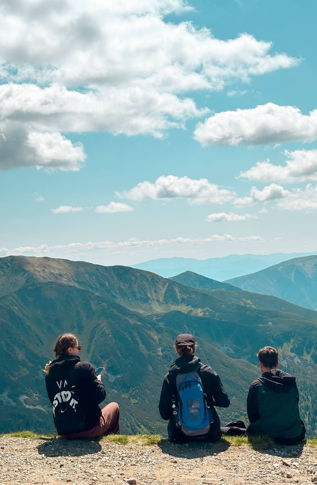

Aimer en Grand · Parcours catholique · Pilote Lausanne · 14-18 ans
3 sessions et un week-end en montagne pour parler vrai de l'amitié, du cœur, et de ce que veut dire aimer, à la lumière de la foi catholique. En petit groupe, avec d'autres jeunes de Lausanne.
« J'aimerais des relations simples, sans prise de tête. »- un jeune, enquête Aimer en Grand
Le Parcours · Aimer en Grand
Aimer en Grand n'est pas un cours de catéchisme, ni une liste de ce qu'il faudrait penser sur tel ou tel sujet. C'est une rencontre : un chemin vécu à plusieurs, où l'on part de ce qu'on vit vraiment pour explorer, à la lumière de la foi chrétienne, ce que Dieu a pensé pour chacun de nous dans nos relations.
Partir de l'expérience vécue, la reconnaître, l'éclairer, et permettre un choix libre. Format: 3 sessions + un week-end en immersion. Ancré dans la Théologie du Corps de Jean-Paul II.
L'amitié : première école du don
La confiance, le discernement, la différence entre relation et connexion.
Le corps : lieu de présence
Mon corps dit quelque chose de vrai sur ma capacité à donner et à recevoir.
Les émotions et la liberté intérieure
Lire les émotions comme des signaux, les intégrer dans un mouvement vers le bien choisi.
Aimer librement : l'altérité
La différence entre désir et don, entre attraction et engagement.
L'amour en vérité
L'amour comme choix qui demande vérité, liberté et maturité.
Se donner : quel est mon appel personnel?
Pour qui et pour quoi suis-je prêt·e à m'engager ?
Pilote Lausanne 2026-2027
Dimanche 1er novembre · 23-24 janvier (week-end en montagne) · 28 février · 18 avril. Chaque dimanche (11h-16h) : Messe · Repas · Témoignage · Topo.
Deux façons de participer au pilote de Lausanne.
14-18 ans
Places limitées pour le pilote de Lausanne. Écris-nous pour les détails pratiques.
Je m'inscris au parcours →Adultes & jeunes engagés
Aucune expérience requise: formation et accompagnement prévus pour chaque animateur du pilote.
Je m'inscris comme animateur →Pourquoi agir maintenant
Les rapports institutionnels (OMS, CESE, HCFEA) convergent vers un même diagnostic : les adolescents ne manquent pas d'informations sur l'amour ou la sexualité. Ils manquent d'adultes pour les accompagner, de repères relationnels, et d'espaces sécurisants pour comprendre ce qu'ils vivent.
des adolescents vivent avec des troubles psychiques en France et en Suisse
OMS Europe / UNICEF-Unisanté, 2024
des moins de 25 ans déclarent une solitude chronique - contre 7% chez les plus de 65 ans
IFOP / Astrée, 2024
des 18-24 ans se sentent régulièrement seuls tout en passant 5h+ par jour devant un écran
IFOP / Goodflair, 2024
des jeunes recourent désormais à l'IA pour des questionnements strictement personnels
Ipsos France, mai 2026
365 Voix · l'enquête Aimer en Grand
365 répondants · 85% de 14 à 18 ans · Europe francophone · Mars-juin 2026. Questionnaire digital et papier en face-à-face. Un exercice d'écoute, pas un sondage représentatif à l'échelle nationale.
L'amitié avant l'amour romantique
79,3% citent l'amitié comme thème qui les touche - devant l'amour (69,8%) et très loin devant la sexualité (20,4%). Le résultat le plus contre-intuitif de l'enquête.
La confiance comme question prioritaire
« À qui je peux vraiment faire confiance ? » - le score le plus élevé de toute la section. Une urgence pratique et vécue, pas une question abstraite.
Le tête-à-tête, pas la vidéo
85,8% consomment des vidéos courtes chaque semaine. Pourtant, seuls 15% citent ce format comme vecteur d'un vrai déclic. Ce qui transforme : la présence et le témoignage.
La sécurité émotionnelle avant tout
« Que les personnes soient honnêtes » (76%) et « ne pas être jugé·e » (75%) dominent les conditions pour parler. La durée courte ne joue qu'un rôle marginal (26%).
« Les jeunes ne formulent pas leurs besoins depuis le manque. Ils formulent leurs besoins depuis le désir : ils veulent des relations vraies, des interlocuteurs honnêtes, un espace où la parole ne coûte pas trop cher. »
Enquête Aimer en Grand · RésultatsDEEP · un second parcours en préparation
DEEP (nom provisoire) n'est pas non plus un enseignement sur les choix « corrects » à faire en fin de scolarité : c'est un accompagnement qui part de ton vécu concret pour t'aider à discerner ce à quoi tu es appelé·e - et à prendre tes décisions d'avenir en accord avec qui tu es vraiment.
DEEP s'adresse en particulier aux jeunes de 17-18 ans qui cherchent des clés pour prendre des décisions sur leur avenir - études, orientation, choix de vie. Il part d'une conviction : les réponses sur notre orientation commencent par une meilleure connaissance de soi, éclairée par la foi, qui permet de discerner ce qui nous appelle vraiment.
La méthode s'appuie sur les travaux d'un professeur d'une université catholique aux États-Unis, développés à partir de plus de vingt ans d'accompagnement de jeunes et d'étudiants. Elle part de récits concrets - des moments vécus où l'on s'est senti pleinement soi-même - pour faire apparaître ce qui nous anime en profondeur, les environnements où l'on donne le meilleur de soi, et notre manière propre de nous donner aux autres. L'accompagnement se fait toujours avec un adulte formé ; un outil numérique peut aider à organiser les échanges, mais ne remplace jamais cette présence.
Ce qui m'anime
Mes désirs profonds
Les orientations qui reviennent, encore et encore, dans les moments où je me suis senti·e le plus vivant·e et pleinement moi-même.
Où je donne le meilleur de moi
Mes environnements
Les conditions, les lieux, les relations qui me permettent réellement de m'épanouir - pas seulement ceux où je me sens à l'aise.
Ma manière de me donner
Mon mode de don de soi
La façon particulière, propre à chacun, d'être utile et présent aux autres.
À l'étude · lancement envisagé en 2027
Une formule en petit groupe, en français, à Lausanne, est actuellement à l'étude. Envie d'être tenu·e informé·e dès que le programme se précise ? Écris-nous →
Qui sommes-nous
Le projet COR n'est ni un parcours de catéchisme, ni une manière d'exposer ce que l'Église pense de tel ou tel sujet. C'est une rencontre et un chemin vécu ensemble, où l'on explore, à partir de ce qu'on vit vraiment, ce que Dieu a pensé pour chacun de nous.
Il part d'une conviction : la période 14-18 ans est un moment clef, où la réflexion et le partage sur nous-mêmes, notre intériorité et nos relations aux autres sont essentiels. Notre ambition : créer des espaces conviviaux où ces questions de fond peuvent se dire librement, avec des repères chrétiens pour les éclairer et un accompagnement pour chaque personne.
Pourquoi « COR » ? C'est le mot latin pour dire cœur. On l'a choisi parce qu'il dit ce qui nous intéresse vraiment : ce qui se passe dans le cœur d'un jeune, quand il se pose de vraies questions sur ses relations, sur qui il est, sur ce qu'il veut devenir.
« Le cœur parle au cœur. » C'est la devise que s'est choisie, au 19e siècle, le cardinal John Henry Newman : pour lui, ce qui touche vraiment ne passe jamais par les seules idées, mais par une présence, d'une personne à une autre.
Cardinal John Henry NewmanDeux parcours incarnent aujourd'hui cette conviction :
14-18 ans · pilote Lausanne
Pour les 14-18 ans qui se posent des questions sur leurs relations - amicales, amoureuses, familiales - et veulent découvrir comment un chemin de foi peut les éclairer.
17-18 ans · envisagé en 2027
Un second parcours en préparation, pour les 17-18 ans qui cherchent des repères pour prendre leurs décisions d'avenir.
Rejoindre le projet
Que vous soyez éducateur, animateur, responsable pastoral ou simplement convaincu qu'il faut agir maintenant - nous avons besoin de vous pour ce projet.
Coordination
Messiane Cazé
Master Théologie du Corps · ITC Lyon